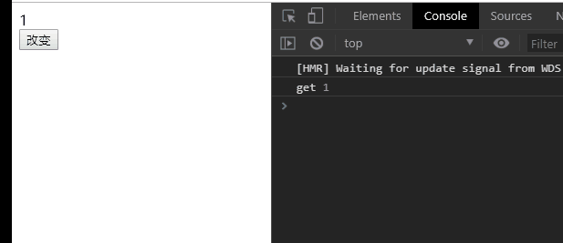

008-customRef
这章涉及api: customRef()
customRef()可以让我们自己定义一个ref函数
自定义函数格式:
// 自定义一个ref函数
// 接受一个参数，这个参数是内存中ref的值
// 里面return customRef()
function useDebouncedRef(value) {
return customRef((track, trigger) => {
return {
get () {},
// 这里的newVal是我们每次调用 .value=12 中的12
// 这里的set()在初始化的时候不会调
set (newVal) {}
}
});
}
比如我们自定义一个ref函数
function useDebouncedRef(value) {
return customRef((track, trigger) => {
return {
get () {
console.log('get', value);
return value;
},
set (newVal) {
console.log('set', value, newVal);
value = newVal;
}
}
});
}
const data = useDebouncedRef(1);
function change() {
data.value+=1;
}
- 页面刚刷新的时候，如果html中有用到data变量，就会触发set，整个过程不会触发get

- 并且每次点击按钮，会发现先执行了get，再执行了set。这是为什么呢
首先，页面刚刷新的时候的get，是因为html中用到了，就会触发1次。
接着点击按钮触发change()，里面代码是data.value+=1等价于data.value=data.value+1，这里的等号右边的data.value拿了1次，所以触发了get，然后赋值给等号左边的data.value，触发了set
- 这么写，当改变data的值的时候，html并不会更新。要触发html的更新，就需要
track()/trigger()这2个函数上场了
track(): 告诉vue这个数据是需要追踪变化的
trigger(): 告诉vue更新html界面
function useDebouncedRef(value) {
let timeout;
return customRef((track, trigger) => {
return {
get () {
track();
return value;
},
set (newVal) {
console.log('set', value, newVal);
clearTimeout(timeout);
timeout = setTimeout(() => {
value = newVal; // 改变js里面的值
trigger(); // 更新html模板
}, 1000);
}
}
});
}
const data = useDebouncedRef(1);
function change() {
data.value+=1;
console.log(data.value); // 这里得到的是加之前的值，因为设置自定义ref函数里面有个延长器
}